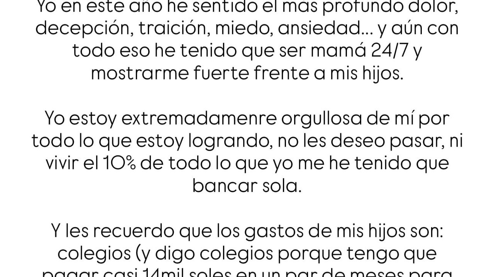

JEE inician entrega de credenciales a alcaldes y regidores electos para el periodo 2027 a 2030. Con estos documentos, las nuevas autoridades quedaron listas para juramentar y ejercer sus funciones durante el periodo municipal 2027 a 2030.





JEE inician entrega de credenciales a alcaldes y regidores electos para el periodo 2027 a 2030. Con estos documentos, las nuevas autoridades quedaron listas para juramentar y ejercer sus funciones durante el periodo municipal 2027 a 2030.
La camioneta, en tanto, terminó invadiendo la berma central de la avenida Angamos Este, con visibles daños en su parte frontal.
Sin embargo, la menor ley del mineral extraído en sus unidades Marañón y Santa María golpeó su producción y sus márgenes, pese al alto precio del metal.
El papa León catorce relató las experiencias que tuvo durante su gira por Sudamérica, incluyendo al Perú, y las muestras de cariños que pudo experimentar esto últimos días.
Noriega y Carrillo entran a su semana decisiva, mientras que Gallese pelea por un título. Noriega pelea el descenso, Gallese lucha por un título y Tapia espera el llamado: ¿Qué viene para los peruanos en el exterior y por qué es clave ponerlos bajo lupa?
El vicepresidente de la República y jefe de Gabinete Ministerial, Luis Galarreta, destacó este lunes el mensaje de unidad, reconciliación y amor que transmitió el papa León catorce durante su visita oficial al país, la cual calificó como una "enorme bendición" para el pueblo peruano.
Aunque no tendrá una versión nativa para Xbox One, los usuarios de esta consola también podrán acceder al título mediante Xbox Cloud Gaming, un servicio que permite jugar por transmisión en la nube. ¿A qué hora se podrá jugar GTA 6 en cada país?
De acuerdo con la versión de la Policía Nacional, los tres intervenidos habrían asaltado a un ciudadano en los exteriores de una agencia bancaria en la avenida Separadora Industrial, robándole unos 3 242 dólares.
Los problemas de conducta en el colegio deben atenderse a tiempo. No son al azar: estos son los exámenes que te pedirán en un chequeo médico Gritos, golpes y desplantes: las conductas que no debes tolerar en una relación ¿Tu hijo tiene problemas de comportamiento en el colegio?
Cada edición dura menos de dos minutos. En la web tienes el resumen de cada historia y el enlace directo al medio original para leerla completa.
Conoce Olfatecho →